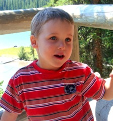
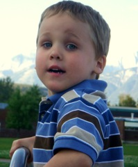

2008: Encruzilhadas
Esta carta também está disponível em Ingles.
Nós recebemos 2008 na praia de Ponta das Canas na Ilha de Santa
Catarina. Daniel re-batizou a praia de "Praia do Daniel." O Daniel
passou a maior parte do tempo na areia e na água. Depois nós fomos
para a praia de Xanguilá no Rio Grande do Sul, que o Daniel chamou de
"Praia da Vovó" porque é lá que a Vovó Dioraci tem uma casa.
Logo depois que nós retornamos do Brasil eu fui para Victoria na
província de British Columbia para uma entrevista para a posição de
chefe do the Departamento de Ciências da Computação. A entrevista
foi muito bem e o departamento demonstrou interesse, mas depois de
algumas semanas de reflexão sobre uma mudança para Victoria, eu
removi meu nome da lista de candidatos. Eu me candidatei a posição
de chefe do departamento de Ciências da Computação da Universidade
de Alberta. Assumir uma posição de chefia seria uma mudança muito
grande na minha carreira porque as responsabilidades administrativas
deixariam muito menos tempo disponível para pesquisa. Eu me
candidatei a ambas as posições depois de sugestões insistentes de
meus colegas. Eu concordei em me candidatar porque eu acredito que eu
poderia fazer um bom trabalho numa posição destas, e que eu estaria
satisfeito com uma mudança destas. Mas o meu departamento em Alberta
decidiu selecionar um outro candidato para a posição de chefia. De
repente eu tive que reativar meus planos para o meu sabbatical que
até então eram apenas preliminares.
 Felizmente meus colaboradores no
Laboratória da IBM em Toronto estavam dispostos a trabalhar
comigo para criar o plano de sabbatical no ultimo
momento. Portanto, e comecei o meu sabbatical no início de
julho e comecei a trabalhar num contrato com a IBM dia 15 de
julho. Como eu terminei um mandato de tres anos como chefe da
pós graduação no final de Junho, esta foi uma mudança
muito boa. De repente eu não tinha nenhuma responsabilidade
administrativa, nenhuma responsabilidade com ensino, e pude
me dedicar exclusivamente a pesquisa. O projeto com a IBM é
muito interessante e me permite examinar de perto os aspectos
praticos de aplicar o que eu ensino na pós-graduação em
uma infra-estrutura industrial.
Felizmente meus colaboradores no
Laboratória da IBM em Toronto estavam dispostos a trabalhar
comigo para criar o plano de sabbatical no ultimo
momento. Portanto, e comecei o meu sabbatical no início de
julho e comecei a trabalhar num contrato com a IBM dia 15 de
julho. Como eu terminei um mandato de tres anos como chefe da
pós graduação no final de Junho, esta foi uma mudança
muito boa. De repente eu não tinha nenhuma responsabilidade
administrativa, nenhuma responsabilidade com ensino, e pude
me dedicar exclusivamente a pesquisa. O projeto com a IBM é
muito interessante e me permite examinar de perto os aspectos
praticos de aplicar o que eu ensino na pós-graduação em
uma infra-estrutura industrial.
Em Março nós fomos para Calgary para visitar a família de
nascimento do Daniel. Pela primeira vez nós tivemos uma reunião com
a mãe do Daniel, Belinda, as duas irmãs dele, Mak e Emily, e os pais
da Emily, Howard e Liz. Em Novembro Emily e a família dela vieram nos
visitar em Edmonton. É impressionante ver como o Daniel e a Emily
brincam tão bem juntos.


 O Antônio e a Wanda Braga, de Minas
Gerais, passaram um ano de sabbatical em Edmonton. O Daniel
se apegou muito aos filhos deles, Bernardo e Mateus, que o
Daniel passou a chamar "my boys". Enquanto eles estavam em
Edmonton nós fizemos muitos programs juntos, incluindo ir a
um jogo de hockey e a um show do Cirque Du Soleil. Quando
eles foram de volta para o Brasil em Agosto o Daniel ficou
muito triste e disse "I lost my boys." Mas no outono o Daniel
fez novas amizades na escola e tambem com Cecília, a filha
de Denilson Barbosa e Bethania (Denilson é um brasileiro e a
mais nova contratação do nosso departamento este ano). Na
escola os amigos mais próximos do Daniel agora são dois
gêmeos, o Dennis e o Sinan, que são da Alemanha. O Daniel
dis que eles são "my brothers." O Daniel com frequência
fala Ingles com um sotaque alemão.
O Antônio e a Wanda Braga, de Minas
Gerais, passaram um ano de sabbatical em Edmonton. O Daniel
se apegou muito aos filhos deles, Bernardo e Mateus, que o
Daniel passou a chamar "my boys". Enquanto eles estavam em
Edmonton nós fizemos muitos programs juntos, incluindo ir a
um jogo de hockey e a um show do Cirque Du Soleil. Quando
eles foram de volta para o Brasil em Agosto o Daniel ficou
muito triste e disse "I lost my boys." Mas no outono o Daniel
fez novas amizades na escola e tambem com Cecília, a filha
de Denilson Barbosa e Bethania (Denilson é um brasileiro e a
mais nova contratação do nosso departamento este ano). Na
escola os amigos mais próximos do Daniel agora são dois
gêmeos, o Dennis e o Sinan, que são da Alemanha. O Daniel
dis que eles são "my brothers." O Daniel com frequência
fala Ingles com um sotaque alemão.
Na primeira metade do ano, conferências e participação em exames
de teses me levaram a San Francisco, Waterloo, Budapeste, e
Tucson.

 Em agosto eu organizei um workshop
internacional em Edmonton e estive involvido em todos os
aspectos de reservar salas, selecionar menus, contratar
onibus, etc. Por sorte eu contei com ajudantes muito
competentes que me diziam o que fazer. Os avôs americanos do
Daniel vieram nos visitar no início de agosto e nós fomos
numa viagem para o Parque Nacional de Jasper na motorhome
deles. Desde então o Daniel diz que a viagem a Jasper com os
avôs é "my favorite holiday."
Em agosto eu organizei um workshop
internacional em Edmonton e estive involvido em todos os
aspectos de reservar salas, selecionar menus, contratar
onibus, etc. Por sorte eu contei com ajudantes muito
competentes que me diziam o que fazer. Os avôs americanos do
Daniel vieram nos visitar no início de agosto e nós fomos
numa viagem para o Parque Nacional de Jasper na motorhome
deles. Desde então o Daniel diz que a viagem a Jasper com os
avôs é "my favorite holiday."
 Nós retornamos a Edmonton para celebrar o
aninversário de 4 anos do Daniel com uma festa cujo tema for
Super-herois. Durante a segunda metade do ano tanto o Scott
como eu trabalhamos em casa, com algumas viagens
professionais de vez em quando. Eu fui para Pasadena,
Portland e Toronto. O Scott foi para Liverpool e Calgary.
Nós retornamos a Edmonton para celebrar o
aninversário de 4 anos do Daniel com uma festa cujo tema for
Super-herois. Durante a segunda metade do ano tanto o Scott
como eu trabalhamos em casa, com algumas viagens
professionais de vez em quando. Eu fui para Pasadena,
Portland e Toronto. O Scott foi para Liverpool e Calgary.
A firma de consultoria do Scott ficou muito mais lenta esta ano. Ele
tem trabalhado esporadicamente como instrutor em cursos de
treinamento. Ele continua a trabalhar duas vezes por semana em duas
lojas de vinho na cidade como um trabalhador esporádico. Ele aprendeu
muito sobre vinhos, e eu me beneficiei muito da seleção de vinhos
bons.


 Este ano o Daddy estava sozinho com o
Daniel para o Halloween. Eles foram fazer "trick or treat"
com os amigos alemães do Daniel. Este outono também o
Sander, O melhor amigo do Daniel desde que ele começou a ir
para a "escola", mudou para outra creche, e o Daniel mudou da
sala dos "Bananas" para a sala dos "Pirulitos". Estas são
grandes transições na vida de um menino de 4
anos. Aparentemente sendo um Pirulito ele está em uma
posição para tirar sarro dos Bananas.
Este ano o Daddy estava sozinho com o
Daniel para o Halloween. Eles foram fazer "trick or treat"
com os amigos alemães do Daniel. Este outono também o
Sander, O melhor amigo do Daniel desde que ele começou a ir
para a "escola", mudou para outra creche, e o Daniel mudou da
sala dos "Bananas" para a sala dos "Pirulitos". Estas são
grandes transições na vida de um menino de 4
anos. Aparentemente sendo um Pirulito ele está em uma
posição para tirar sarro dos Bananas.
Em Novembro eu me voluntariei para coordenar a preparação de um
jantar para uma Noiter Nordestina organizada pela Associação
Brasileira de Edmonton. Tinha mais de 120 pessoas no jantar. I menu
incluiu moqueca de camarão, vatapá e xinxim de galinha. Felizmente
eu tive excelente voluntárias para me ajudar e tudo saiu
bem. Aparentemente o pessoal ficou muito satisfeito com a comida que
nós cozinhamos.

 O outono em Edmonton este ano foi muito
agradável e nos permitiu passar muito tempo fora de casa,
pulando em pilhas de folhas, atirando pedras no rio e fazendo
outras coisas interessantes.
O outono em Edmonton este ano foi muito
agradável e nos permitiu passar muito tempo fora de casa,
pulando em pilhas de folhas, atirando pedras no rio e fazendo
outras coisas interessantes.
Nós estamos agora em Oklahoma visitando os avós do Daniel e a
família do Scott. Como sempre, eu tenho cozinhado várias
refeições, e o Daniel está muito feliz com a atenção de todo
mundo. No dia 3 de janeiro o Scott retorna para Edmonton com o Daniel
e eu vou para Zurique para um workshop. Em Fevereiro nós todos vamos
para o Brazil para férias e para o aninversário de 70 anos da Vovó
Dioraci.
Eu estou escrevendo esta carta na noite de Natal. A Gagá e o Daniel estão fazendo bolachinhas para deixar para o Papai Noel. Logo eu tenho que ir cozinhar o jantar de Natal. Nós estamos tendo uns dias quietos aqui com a Gagá e o Grandpa em Oklahoma. Nós esperamos que voce tambem estaja tendo um bom Natal e que tenha um excelente ano novo.
Nelson, Scott & Daniel
 Felizmente meus colaboradores no
Laboratória da IBM em Toronto estavam dispostos a trabalhar
comigo para criar o plano de sabbatical no ultimo
momento. Portanto, e comecei o meu sabbatical no início de
julho e comecei a trabalhar num contrato com a IBM dia 15 de
julho. Como eu terminei um mandato de tres anos como chefe da
pós graduação no final de Junho, esta foi uma mudança
muito boa. De repente eu não tinha nenhuma responsabilidade
administrativa, nenhuma responsabilidade com ensino, e pude
me dedicar exclusivamente a pesquisa. O projeto com a IBM é
muito interessante e me permite examinar de perto os aspectos
praticos de aplicar o que eu ensino na pós-graduação em
uma infra-estrutura industrial.
Felizmente meus colaboradores no
Laboratória da IBM em Toronto estavam dispostos a trabalhar
comigo para criar o plano de sabbatical no ultimo
momento. Portanto, e comecei o meu sabbatical no início de
julho e comecei a trabalhar num contrato com a IBM dia 15 de
julho. Como eu terminei um mandato de tres anos como chefe da
pós graduação no final de Junho, esta foi uma mudança
muito boa. De repente eu não tinha nenhuma responsabilidade
administrativa, nenhuma responsabilidade com ensino, e pude
me dedicar exclusivamente a pesquisa. O projeto com a IBM é
muito interessante e me permite examinar de perto os aspectos
praticos de aplicar o que eu ensino na pós-graduação em
uma infra-estrutura industrial.